Steven Katsaris
Mar 26th 1928 - Jul 26th 2019
 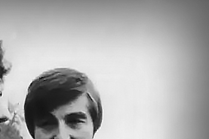
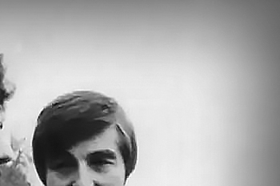


 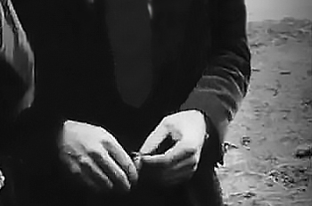
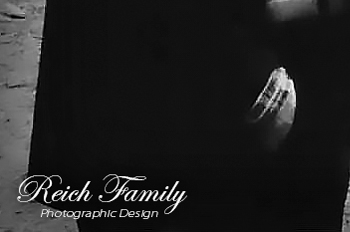
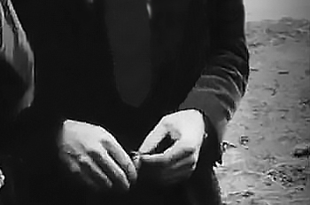
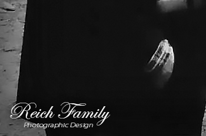

Remembering Steven Katsaris
(REICH) 11/03/24 - Steven Anthony Katsaris was born on 26 March 1928 in Canton, Ohio to Antonious Anthony Peter Katsaris and Mary A Christou Katsaris. Steven's parents immigrated from the island of Euboea in Greece.
Steven Katsaris married Sophia M Papadeas. They divorced in October 1970 in San Mateo California. Steven Katsaris then married Anne Katherine Tomaja in 1972 in Mendocino California. Anne was born on November 11, 1940. She later became a nurse. Steven and Anne divorced in March 1977 in Mendocino California. Steven and Anne remarried on 17 September 1989 in Reno Nevada.
Steven Katsaris had three children with Sophia M Papadeas Katsaris. Anthony Katsaris was their son. Maria Katsaris was born June 9th 1953 in Pittsburgh Pennsylvania. She died on November 18th 1978 in Jonestown Guyana South America. Elaine Constance Katsaris (Launer) was born April 7th 1959 in Salt Lake City Utah. She died on July 24th 2000 in San Mateo California. The Social Security Numerical Identification File for Elaine Constance Katsaris lists her as the daughter of Steven A Katsaris and Sophia M Papadeas.
Steven was a Greek Orthodox Reverend Father. Steven was the head of Trinity School in Ukiah California. Steven was a Reverend Father in various Greek Orthodox Churches across the U.S.
In August 1972, the Katsaris family was first introduced to a religious group in Ukiah California called the Peoples Temple headed by Reverend Jim Jones. Steven Katsaris was the guest speaker at a late night meeting convened just for him. In attendance was his 19 year old daughter, Maria Katsaris. After Steven Katsaris finished his guest speaking, the family left the building while the tape continued to roll with Jones continuing to address his congregation. Jones denounced the Greek Orthodox Church and further denounced Steven Katsaris. He then expressed his interest in winning over Maria Katsaris. Steven's daughter, Maria Katsaris, joined the Peoples Temple. She traveled with the group to Guyana South America where she would later play a major role in Jones' organization, especially in the final year of its existence.
Steven Katsaris appealed to the media and to politicians who represented his district in California to bring his daughter home whom he felt was being held against her will by Jim Jones in Jonestown Guyana. On April 17th 1978, in a radio transmission from Jonestown to address concerned relatives in America, Maria Katsaris made strong accusations against her father. She vowed she would never leave Jonestown and return to the US.
On November 18th 1978, in Jonestown Guyana South America, Jim Jones led 909 members of The Peoples Temple in the largest mass suicide in history. Congressman Leo Ryan; photographer Greg Robinson of The San Francisco Examiner; NBC cameraman Bob Brown; NBC reporter Don Harris; and Temple defector Patricia Parks - were shot to death by Jim Jones' loyal death squad on the Port Kaituma airstrip. Sharon Amos and her grown daughter Liane Harris along with Sharon's young children, Christa Amos and Martin Amos, all died at the Peoples Temple house in Lamaha Gardens in Georgetown. Anthony Katsaris was badly wounded on the airstrip.
Prior to the mass suicide, Anthony Katsaris traveled to Jonestown with Congressman Leo Ryan to persuade his sister, Maria Katsaris, to return with him to California. In a photo of Maria and Anthony on the morning of the suicides in Jonestown, likely taken by San Francisco Examiner photographer, Greg Robinson, who was killed by Jones' death squad at the Port Kaituma airstrip, Anthony looks thankful and happy to just be standing next to his sister. His face speaks volumes of his adoration and love for a sister, it seems, he'd love to hold and never let go. Maria, on the other hand, has a far away look on her face of utter obstination. Aside from taking photos of the siblings, NBC News conducted a short interview with Maria and Anthony in Jonestown in November 1978.
Maria Katsaris died on the night of November 18th 1978, in Jim Jones' cabin, by self-administered cyanide poisoning. She was 25 years old. Maria Katsaris was laid to rest at Potter Valley Cemetery in Potter Valley, Mendocino County, California.
The Reverend Father Steven Anthony Katsaris died on 26 July 2019 at the ripe old age of 91 in Spokane Washington. Trisagion service was held on July 31, 2019 at 5:00 PM and his funeral was on August 1, 2019 at 8:00 AM at Holy Trinity Greek Orthodox Church, 1703 N Washington St, Spokane, Washington. Advantage Funeral and Cremation Services South Hill of Spokane, Washington was in charge of the funeral services. Reverend Father Steven Katsaris is laid to rest at Whitepine Cemetery in White Pine, Sanders County, Montana.
God rest your sweet soul, Reverend Father Steven. May you linger in the sweet embrace of your lovely daughters, Maria and Elaine.
Copyright 2024 All Rights Reserved
April 17th 1978


 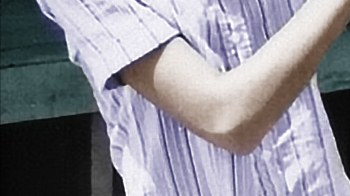
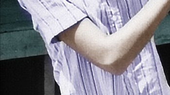


November 1978
November 18th 1978


 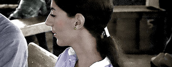
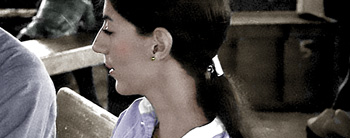


 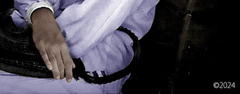
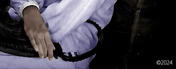
November 18th 1978


Peoples Temple Resources
Research, Writing and Photographic Design by The Reich Family
Special thanks to the research of Barnett
Sources:
"United States Census, 1940", FamilySearch (https://www.familysearch.org/ark:/61903/1:1:KWP3-RTJ : Thu Mar 07 13:14:16 UTC 2024), Entry for Antonious Katsaris and Mary Katsaris, 1940.
"California Divorce Index, 1966-1984," FamilySearch (https://familysearch.org/ark:/61903/1:1:VPTJ-NM2 : 15 May 2014), Sophia M Papadeas and Steven A Katsaris, Oct 1970; from "California Divorce Index, 1966-1984," database and images, Ancestry (http://www.ancestry.com : 2007); citing San Mateo, California, Health Statistics, California Department of Health Services, Sacramento.
"California Divorce Index, 1966-1984," FamilySearch (https://familysearch.org/ark:/61903/1:1:VPTJ-NMV : 15 May 2014), Anne K Thomaja and Steven A Katsaris, Mar 1977; from "California Divorce Index, 1966-1984," database and images, Ancestry (http://www.ancestry.com : 2007); citing Mendocino, California, Health Statistics, California Department of Health Services, Sacramento.
"Nevada Marriage Index, 1956-2005", FamilySearch (https://familysearch.org/ark:/61903/1:1:VVVN-ML8 : 20 September 2019), Steven Anthony Katsaris and Anne Katherine Tomaja, 1989.
Alternative Considerations of Jonestown & Peoples Temple
NBC News 1978 Interview with Anthony and Maria Katsaris
Cameraman: Bob Brown / Interviewer: Don Harris
Radio Calls for Concerned Relatives April 17 1978
FBI No. Q 736 Press conference on Concerned Relatives (Maria speaks at 19:54)
San Francisco Examiner / UPI 1978 / Photographer: Greg Robinson